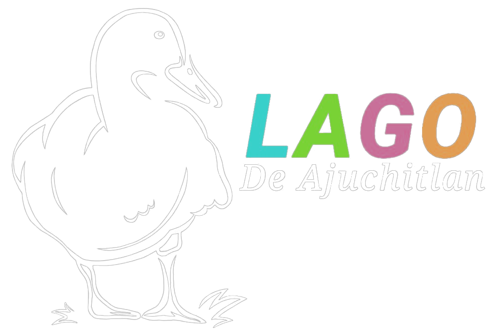

BIENVENIDO DE NUEVO
Iniciar sesión
Accede a tu cuenta del Lago de Ajuchitlán.
¿No tienes cuenta? Regístrate
Continuar como visitante →
Lago deBIENVENIDO DE NUEVO
Accede a tu cuenta del Lago de Ajuchitlán.
¿No tienes cuenta? Regístrate
Continuar como visitante →